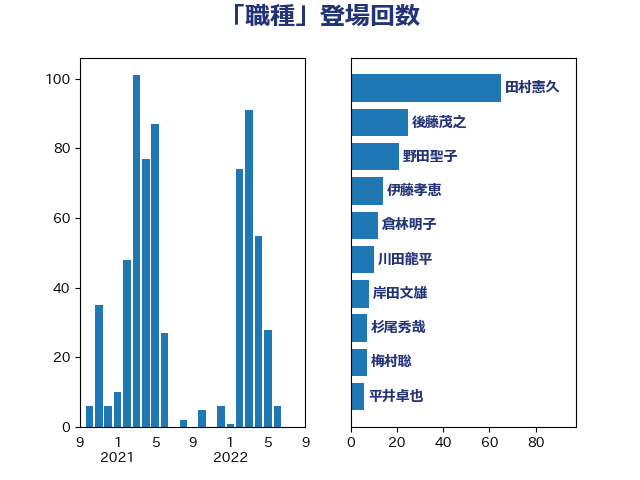

単語「職種」

| 田村憲久 | 自由民主党 | 65 回 |
| 後藤茂之 | 自由民主党 | 25 回 |
| 野田聖子 | 自由民主党 | 21 回 |
| 伊藤孝恵 | 国民民主党 | 14 回 |
| 倉林明子 | 日本共産党 | 12 回 |
| 川田龍平 | 立憲民主党 | 10 回 |
| 岸田文雄 | 自由民主党 | 8 回 |
| 杉尾秀哉 | 立憲民主党 | 7 回 |
| 梅村聡 | 日本維新の会 | 7 回 |
| 平井卓也 | 自由民主党 | 6 回 |
| 斎藤嘉隆 | 立憲民主党 | 6 回 |
| 田村智子 | 日本共産党 | 6 回 |
| 赤羽一嘉 | 公明党 | 6 回 |
| 道下大樹 | 立憲民主党 | 6 回 |
| 高木かおり | 日本維新の会 | 6 回 |
| 吉田統彦 | 立憲民主党 | 5 回 |
| 山際大志郎 | 自由民主党 | 5 回 |
| 川合孝典 | 国民民主党 | 5 回 |
| 羽生田俊 | 自由民主党 | 5 回 |
| 谷合正明 | 公明党 | 5 回 |
| 今井絵理子 | 自由民主党 | 4 回 |
| 城井崇 | 立憲民主党 | 4 回 |
| 塩村あやか | 立憲民主党 | 4 回 |
| 玉木雄一郎 | 国民民主党 | 4 回 |
| 畦元将吾 | 自由民主党 | 4 回 |
| 緒方林太郎 | 無所属 | 4 回 |
| 西村智奈美 | 立憲民主党 | 4 回 |
| 吉川元 | 立憲民主党 | 3 回 |
| 国光あやの | 自由民主党 | 3 回 |
| 坂本哲志 | 自由民主党 | 3 回 |
| 後藤祐一 | 立憲民主党 | 3 回 |
| 本村伸子 | 日本共産党 | 3 回 |
| 浜口誠 | 国民民主党 | 3 回 |
| 矢倉克夫 | 公明党 | 3 回 |
| 羽田次郎 | 立憲民主党 | 3 回 |
| 自見はなこ | 自由民主党 | 3 回 |
| 萩生田光一 | 自由民主党 | 3 回 |
| 谷田川元 | 立憲民主党 | 3 回 |
| 遠藤良太 | 日本維新の会 | 3 回 |
| 長友慎治 | 国民民主党 | 3 回 |
| 高階恵美子 | 自由民主党 | 3 回 |
| 上川陽子 | 自由民主党 | 2 回 |
| 上野通子 | 自由民主党 | 2 回 |
| 下野六太 | 公明党 | 2 回 |
| 伊佐進一 | 公明党 | 2 回 |
| 伊藤岳 | 日本共産党 | 2 回 |
| 佐藤英道 | 公明党 | 2 回 |
| 吉田とも代 | 日本維新の会 | 2 回 |
| 塩川鉄也 | 日本共産党 | 2 回 |
| 塩田博昭 | 公明党 | 2 回 |
| 宮本徹 | 日本共産党 | 2 回 |
| 小沢雅仁 | 立憲民主党 | 2 回 |
| 山口那津男 | 公明党 | 2 回 |
| 山本博司 | 公明党 | 2 回 |
| 山添拓 | 日本共産党 | 2 回 |
| 山田勝彦 | 立憲民主党 | 2 回 |
| 岸信夫 | 自由民主党 | 2 回 |
| 岸真紀子 | 立憲民主党 | 2 回 |
| 斉藤鉄夫 | 公明党 | 2 回 |
| 渡辺創 | 立憲民主党 | 2 回 |
| 石川香織 | 立憲民主党 | 2 回 |
| 石田昌宏 | 自由民主党 | 2 回 |
| 福島みずほ | 社会民主党 | 2 回 |
| 赤池誠章 | 自由民主党 | 2 回 |
| 馬淵澄夫 | 立憲民主党 | 2 回 |
| 高橋千鶴子 | 日本共産党 | 2 回 |
| こやり隆史 | 自由民主党 | 1 回 |
| ながえ孝子 | 無所属 | 1 回 |
| 世耕弘成 | 自由民主党 | 1 回 |
| 中川正春 | 立憲民主党 | 1 回 |
| 中野洋昌 | 公明党 | 1 回 |
| 丸川珠代 | 自由民主党 | 1 回 |
| 伊波洋一 | 無所属 | 1 回 |
| 伊藤俊輔 | 立憲民主党 | 1 回 |
| 佐藤啓 | 自由民主党 | 1 回 |
| 務台俊介 | 自由民主党 | 1 回 |
| 古川禎久 | 自由民主党 | 1 回 |
| 古賀篤 | 自由民主党 | 1 回 |
| 吉田久美子 | 公明党 | 1 回 |
| 嘉田由紀子 | 無所属 | 1 回 |
| 塩崎彰久 | 自由民主党 | 1 回 |
| 大串正樹 | 自由民主党 | 1 回 |
| 大塚耕平 | 国民民主党 | 1 回 |
| 宮本岳志 | 日本共産党 | 1 回 |
| 岡本あき子 | 立憲民主党 | 1 回 |
| 打越さく良 | 立憲民主党 | 1 回 |
| 早稲田ゆき | 立憲民主党 | 1 回 |
| 末松信介 | 自由民主党 | 1 回 |
| 松川るい | 自由民主党 | 1 回 |
| 松沢成文 | 日本維新の会 | 1 回 |
| 柴田巧 | 日本維新の会 | 1 回 |
| 梅谷守 | 立憲民主党 | 1 回 |
| 梶山弘志 | 自由民主党 | 1 回 |
| 森屋隆 | 立憲民主党 | 1 回 |
| 森田俊和 | 立憲民主党 | 1 回 |
| 横沢高徳 | 立憲民主党 | 1 回 |
| 比嘉奈津美 | 自由民主党 | 1 回 |
| 河野太郎 | 自由民主党 | 1 回 |
| 泉健太 | 立憲民主党 | 1 回 |
| 浅野哲 | 国民民主党 | 1 回 |
| 浦野靖人 | 日本維新の会 | 1 回 |
| 深澤陽一 | 自由民主党 | 1 回 |
| 渡辺周 | 立憲民主党 | 1 回 |
| 熊野正士 | 公明党 | 1 回 |
| 片山大介 | 日本維新の会 | 1 回 |
| 牧島かれん | 自由民主党 | 1 回 |
| 玄葉光一郎 | 立憲民主党 | 1 回 |
| 田中健 | 国民民主党 | 1 回 |
| 田島麻衣子 | 立憲民主党 | 1 回 |
| 田所嘉徳 | 自由民主党 | 1 回 |
| 田村まみ | 国民民主党 | 1 回 |
| 石井啓一 | 公明党 | 1 回 |
| 石井苗子 | 日本維新の会 | 1 回 |
| 石川博崇 | 公明党 | 1 回 |
| 石橋通宏 | 立憲民主党 | 1 回 |
| 神田潤一 | 自由民主党 | 1 回 |
| 福山哲郎 | 立憲民主党 | 1 回 |
| 福島伸享 | 無所属 | 1 回 |
| 竹内真二 | 公明党 | 1 回 |
| 竹内譲 | 公明党 | 1 回 |
| 笠浩史 | 無所属 | 1 回 |
| 紙智子 | 日本共産党 | 1 回 |
| 菅義偉 | 自由民主党 | 1 回 |
| 藤田文武 | 日本維新の会 | 1 回 |
| 西村康稔 | 自由民主党 | 1 回 |
| 赤木正幸 | 日本維新の会 | 1 回 |
| 足立敏之 | 自由民主党 | 1 回 |
| 輿水恵一 | 公明党 | 1 回 |
| 辻清人 | 自由民主党 | 1 回 |
| 野上浩太郎 | 自由民主党 | 1 回 |
| 金子恭之 | 自由民主党 | 1 回 |
| 鈴木義弘 | 国民民主党 | 1 回 |
| 階猛 | 立憲民主党 | 1 回 |
| 青木愛 | 立憲民主党 | 1 回 |
| 高橋光男 | 公明党 | 1 回 |
| 高良鉄美 | 無所属 | 1 回 |
| 高野光二郎 | 自由民主党 | 1 回 |
| 鳩山二郎 | 自由民主党 | 1 回 |